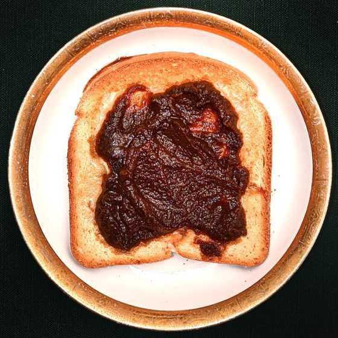
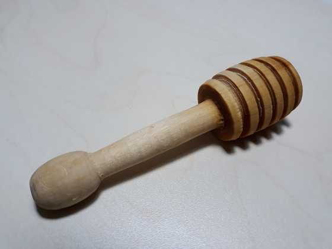
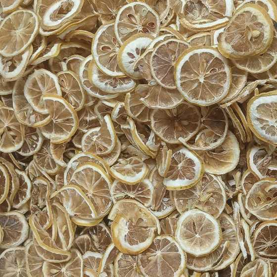

静岡県磐田市中泉 / cafe kalon
余分なものを足さない、
素材のままの美味しさを。
無添加にこだわるカフェ。体にも気持ちにも、すっとなじむ一杯と一皿を。
お店の由来・想い
「無添加」を、ひとつの約束に。
cafe kalon は、磐田市中泉のカフェです。お店のInstagramによると、2025年3月20日にオープンし、「無添加にこだわっています」と紹介されています。
お店は、ジュビロ磐田にちなんだ「ジュビロCafe by CafeKalon」というアカウントとも関わりがあるようです。地元のまちに根ざして、日常に寄り添う一軒として歩み始めたお店です。
このページでは、確認できたこの事実を軸に、「素材そのものの美しさを大切にする」というイメージで構成しました。
情報源: 店舗Instagram(@cafekalon__esfrontier)のプロフィール
※「kalon」はギリシャ語で「美しい・善いもの」を指す言葉として知られますが、店名の由来がそこにあるかは確認できていません。ここでの解釈は制作側のイメージです。

素材のこと
果実、蜂蜜、ナッツ、茶葉。素直な素材をそのまま。
無添加のカフェと聞いて思い浮かべる、素材そのものの姿を集めました。実際のお店で使う食材ではなく、あくまで雰囲気を伝えるためのイメージ写真です。





メニュー・提供内容
ひと息つくための、カフェのひととき。
お飲み物・お食事・おやつの詳細は準備中です。以下は雰囲気を伝えるイメージ写真で、実際のメニューとは異なります。

焼き菓子
詳細・価格:準備中

ケーキ
詳細・価格:準備中

お茶
詳細・価格:準備中

朝のひと皿
詳細・価格:準備中

あたたかい飲み物
詳細・価格:準備中

季節のフルーツ
詳細・価格:準備中
営業時間・定休日・お電話番号:準備中
過ごし方
窓辺の一杯で、気持ちをととのえる。


口コミ
こんなお声が聞こえてきそう(イメージ例)
素材の味がしっかり分かって、食べたあとも体が軽い気がしました。また寄りたいです。
来店された方のイメージ無添加と聞いて安心して小さな子と入れました。ゆっくり過ごせる居心地のよさがありました。
来店された方のイメージ散歩の途中、ふらっと立ち寄って一息。やさしい甘さのおやつに癒されました。
来店された方のイメージ※創作したイメージ例であり、実在のお客様の声ではありません。
アクセス
磐田市中泉で、お待ちしています。
- 店名
- cafe kalon
- 住所
- 〒438-0078
静岡県磐田市中泉1275-3 - 電話
- 準備中
- 営業時間
- 準備中
- 定休日
- 準備中
このページの写真はすべてフリー素材のイメージで、cafe kalon の実際の店内・メニュー・食材ではありません。
写真クレジット
- bush.jpg: Blueberries in a polyhouse in Greek / Raju Babu / CC0 1.0 / 出典
- toast.jpg: Toasted oatmeal bread with butter and apple butter - Massachusetts / Daderot / CC0 1.0 / 出典
- honey.jpg: Honey dipper / Matankic / CC0 1.0 / 出典
- nuts.jpg: Pecans, hazelnuts, walnuts, almonds, Brazil nuts on a table with logs 3 / Baileynorwood / CC0 1.0 / 出典
- lemon.jpg: Dried lemon slices / Fumikas Sagisavas / CC0 1.0 / 出典
- grapes.jpg: BUNCH WINE GRAPES green close up / Alabama Extension / CC0 1.0 / 出典
- tealeaf.jpg: Tea Leaves (Camellia Sinensis) / VickyOmondi / CC0 1.0 / 出典
- peach.jpg: Peaches with jam jars and boiling water bath canner / Nutrition, Food Safety & Health / CC0 1.0 / 出典
- financier.jpg: Chocolate financier / Syced / CC0 1.0 / 出典
- cake.jpg: Chocolate raspberry dessert / Funknendai / CC0 1.0 / 出典
- cup.jpg: Cup of tea isolated on white background / Petr Kratochvil / CC0 1.0 / 出典
- oats.jpg: Oatmeal with a cherry compote / Chandapiwa Malema / CC0 1.0 / 出典
- cocoa.jpg: Hot chocolate (Unsplash) / Alisa Anton / CC0 1.0 / 出典
- blueberry.jpg: Blueberriessss / Suzy Hazelwood / CC0 1.0 / 出典
- mugbook.jpg: A white mug sits on open books beside a window / Shixart1985 / CC BY 2.0
- teal.jpg: Bright turquoise mug sits on a wooden table by the window / Shixart1985 / CC BY 2.0
- chairs.jpg: A small, inviting corner features a wooden table with two chairs beside a large window / Shixart1985 / CC BY 2.0